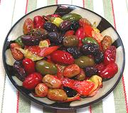

|
Olives al FornoItaly - Olives al Forno | ||||
| Makes: Effort: Sched: DoAhead: |
1-1/2 # ** 30 min Yes |
A popular appetizer in Italy, variously made. It can be made well ahead, refrigerated, and rewarmed before serving, or served at room temperature. | |||
|
|
1-1/2 1 1 5 8 ar 1/2 |
# cl |
Olives mixed (1) Orange (zest) Lemon (zest) Garlic Peperoncini (2) Herbs, fresh (3) Olive Oil ExtV |
This recipe is my compilation from several Italian recipes. Some recipes use fennel seeds as part of the flavorings, some don't have peperoncini but sprinkle the finished dish with balsamic vinegar. Make - (30 min)
|